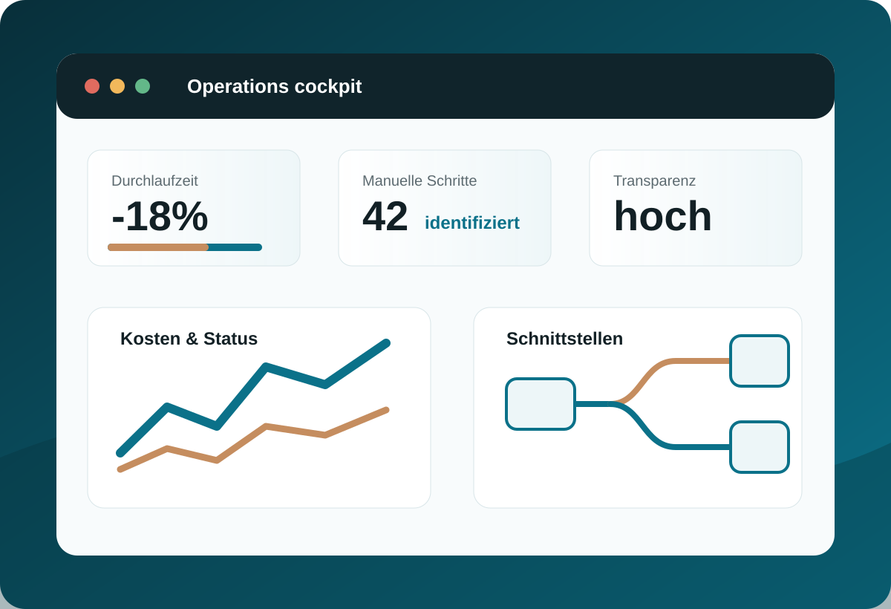
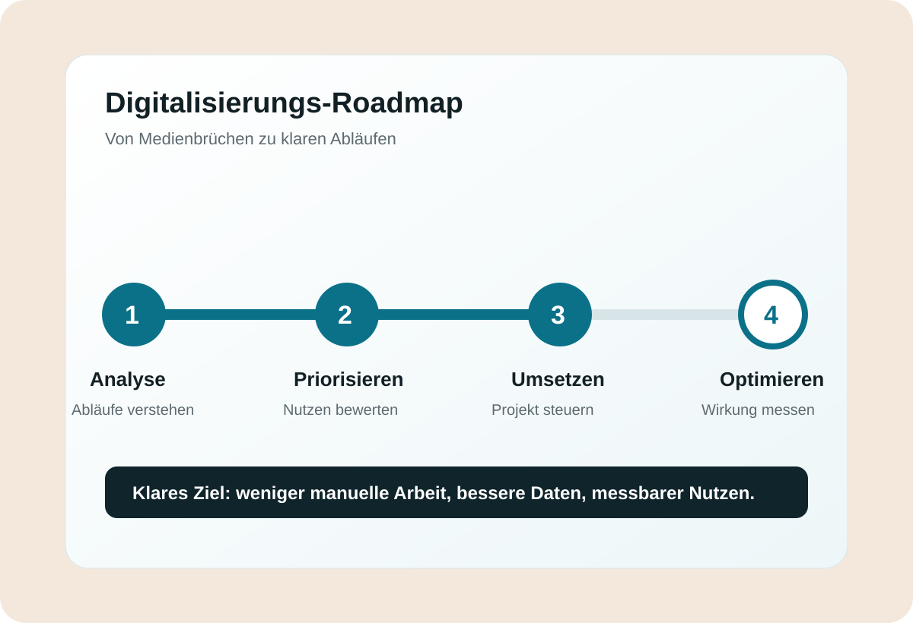

Excel-Schleifen, Doppelpflege und Medienbrüche reduzieren.
Bonanno Consulting
Prozesse digitalisieren. Wachstum steuerbar machen.
Ich helfe mittelständischen Unternehmen, manuelle Abläufe zu reduzieren, ERP-/CRM-Prozesse zu schärfen und digitale Vorhaben sauber umzusetzen.
01
Manuelle Arbeit reduzieren
02
ERP- und CRM-Prozesse schärfen
03
Digitalisierungsprojekte führen
Daten, Status und Kosten schneller sichtbar machen.
Digitalisierungsprojekte strukturiert führen.
Wirkung
Aus gewachsenen Abläufen wird ein steuerbares System.


Leistungen
Beratung dort, wo Prozesse und Systeme ineinandergreifen.
Prozessanalyse
Abläufe verstehen, Engpässe sichtbar machen, Prioritäten setzen.
ERP- & CRM-Optimierung
Systeme näher an Vertrieb, Operations, Finanzen und Daten bringen.
IT-Projektmanagement
Vorhaben strukturieren, Beteiligte koordinieren, Umsetzung sichern.
System- und Datenflüsse
Schnittstellen, Verantwortlichkeiten und Informationsqualität verbessern.
Roadmap
Konkrete nächste Schritte mit Nutzen, Aufwand und Reihenfolge.
Fokusbereiche
Pragmatisch für Mittelstand, IT und operative Teams.
Transparente Zahlen
Kosten, Daten und Entscheidungsgrundlagen klarer machen.
Bessere Systeme
Tools, Schnittstellen und Datenflüsse sauber aufstellen.
Stabile Abläufe
Prozesse in Fertigung und Tagesgeschäft effizienter machen.
Vorgehen
Vom ersten Überblick zur belastbaren Umsetzung.
Diagnose
Was bremst wirklich?
Priorisierung
Was bringt schnell Wirkung?
Roadmap
Was wird wann umgesetzt?
Begleitung
Wie bleibt das Projekt auf Kurs?
Über mich
Carmelo Bonanno
Ich verbinde IT-Systeme, Digitalisierung, Projektmanagement und Prozessoptimierung. Mein Anspruch: klare Analyse, realistische Prioritäten und Lösungen, die im Alltag funktionieren.
Arbeitsweise
Kein Buzzword-Projekt. Ein umsetzbarer Plan.
Kontakt
Lassen Sie uns den ersten Engpass identifizieren.
Buchen Sie direkt einen Termin für ein kostenloses Erstgespräch.
carmelo.bonanno@bonanno-consulting.com
Erstgespräch
30 Minuten, klarer Blick auf Ihren nächsten Schritt.
Wir klären, wo Prozesse, Systeme oder Daten aktuell bremsen und welche Maßnahmen zuerst sinnvoll sind.
Termin buchen